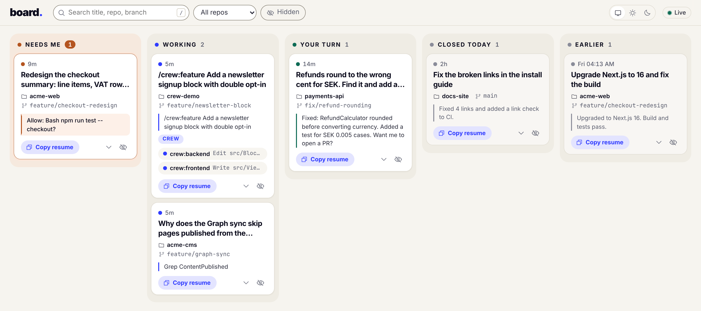

Five terminals, three repos, one prompt waiting for you somewhere. board shows every Claude Code session on your machine as a card: what needs you now, what is running and where, and how to get back into what you worked on yesterday.
$ claude plugin marketplace add johantor/plugins $ claude plugin install board@johantor
Then run /board:open in any session.

Each card shows the title, the repo and branch, the latest activity, and how long ago it
happened. Copy resume copies cd '<dir>'; claude --resume <id>.
A permission prompt, a question, or an API error. The tab title counts them.
Claude is on a turn. Subagents show on their session's card with the tool they run.
The turn ended and Claude waits for your next prompt.
Sessions that ended today, with their last reply.
The last 7 days. Press / to search back 30.
~/.claude/board/events.jsonl. Ten hooks are async; none fails a session.Prompts and replies can hold client code and secrets. Nothing is sent anywhere.
# one line per event, appended by the hook {"v":1, "ts":1792818514701, "e":"PermissionRequest", "sid":"4f1c…", "pm":"default", "tool":"Bash npm run test -- checkout", "call":"c25e708c98724cee"}
Claude CodeCLI, desktop or IDE extension, with plugin support.Node.js 18+On the PATH that Claude Code's hooks see. No packages to install.WindowsGit for Windows, so the hook runs in Git Bash.Known gaps, such as the card that stays in Needs me while an approved tool runs, are listed in the README.
Sessions that run a crew: agent get a Crew badge, and each subagent shows on
the card with its current tool.